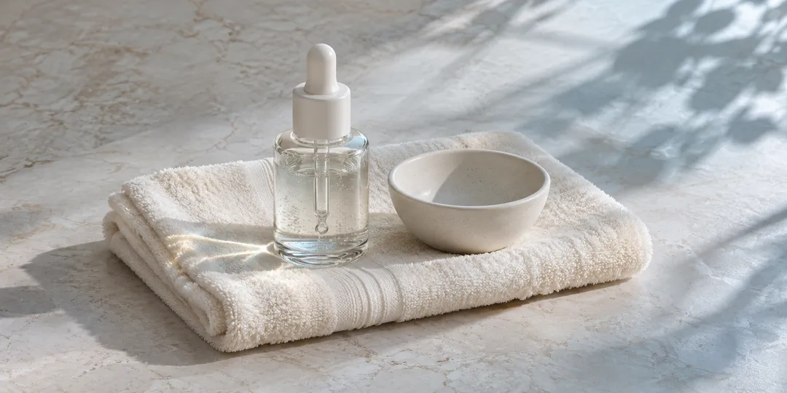

- Indicação
- Poros obstruídos, cravos, pele oleosa ou opaca. Manutenção para todos os tipos de pele.
- Como funciona
- Higienização, esfoliação, emoliência, extração manual, máscara calmante e fotoproteção.
- Duração
- 60 a 90 minutos
- Intervalo
- A cada 30 a 45 dias, conforme a pele
Estética facial
Pele tratada com método.
Tratamentos personalizados para textura, manchas e cicatrizes. Cada plano começa com uma avaliação da sua pele.
Tratamentos
Cinco frentes de cuidado. Cada uma pode ser feita isoladamente ou combinada em um protocolo — o plano é definido na avaliação.
- Indicação
- Textura irregular, manchas, linhas finas, poros dilatados e acne ativa leve.
- Como funciona
- Aplicação de ácidos em concentração definida para acelerar a renovação celular. A profundidade é escolhida conforme o objetivo e o fototipo.
- Duração
- 30 a 45 minutos
- Intervalo
- Sessões em série, definidas na avaliação
- Indicação
- Cicatrizes, poros dilatados, textura irregular, linhas finas e perda de firmeza leve.
- Como funciona
- Microcanais induzem o processo natural de reparo da pele, com produção de colágeno e elastina. Pode ser associado a ativos específicos.
- Duração
- 60 minutos, com anestésico tópico
- Intervalo
- Em média a cada 30 dias
- Indicação
- Cicatrizes atróficas (depressões), marcas residuais e irregularidades deixadas pela acne.
- Como funciona
- Cada tipo de cicatriz responde a uma técnica. O protocolo costuma combinar microagulhamento e peelings em etapas.
- Duração
- Conforme a técnica de cada sessão
- Intervalo
- Tratamento progressivo, ao longo de meses
- Indicação
- Manchas acastanhadas no rosto, geralmente em testa, maçãs e buço, agravadas por sol e calor.
- Como funciona
- Associação de clareadores, peelings suaves e cuidados em casa. O melasma é crônico: o objetivo é clarear e manter sob controle.
- Duração
- Sessões curtas, de 30 a 45 minutos
- Intervalo
- Acompanhamento contínuo, com fotoproteção diária
Método
Resultado consistente vem de diagnóstico, sequência e acompanhamento.
-
Avaliação
Análise do tipo de pele, fototipo, histórico e rotina. É aqui que entendemos o que tratar e em que ordem.
-
Protocolo
Um plano escrito, com técnicas, número estimado de sessões, intervalos e cuidados em casa.
-
Acompanhamento
Revisão a cada etapa, com ajustes conforme a resposta da pele.
Sobre o
Atelier Derme
Um espaço dedicado exclusivamente à pele do rosto, com atendimento individual e tempo para cada etapa.
Dúvidas
Sim. A avaliação define a técnica, a intensidade e a sequência adequadas ao seu tipo de pele, além de identificar contraindicações.
Depende da técnica. Limpeza de pele e peelings superficiais permitem voltar à rotina no mesmo dia. Microagulhamento costuma deixar a pele avermelhada por alguns dias.
Sim, com protocolos adaptados e fotoproteção rigorosa. Alguns procedimentos mais intensos são programados para épocas de menor exposição solar.
Varia conforme o objetivo e a resposta da pele. Você recebe uma estimativa no protocolo, revisada a cada etapa.
Atendimento com hora marcada
Agende sua avaliação.
Preencha seus dados e continue no WhatsApp para combinar um horário.

- (00) 00000-0000
- contato@exemplo.com
- Endereço
- Rua Exemplo, 000 — Sala 00
Cidade, UF - Horário
- Segunda a sexta, 9h às 19h
Sábado, 9h às 13h